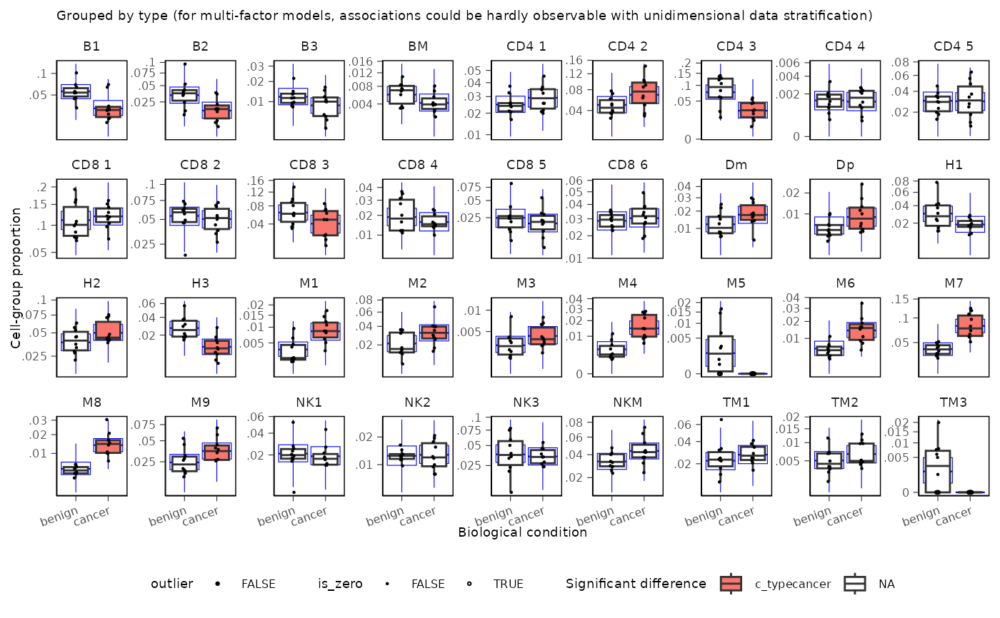

Creates a boxplot visualization of the model results from sccomp. This function plots the estimated cell proportions across samples, highlighting significant changes in cell composition according to a specified factor.
Arguments
- .data
A tibble containing the results from
sccomp_estimateandsccomp_test, including the columns: cell_group name, sample name, read counts, factor(s), p-values, and significance indicators.- factor
A character string specifying the factor of interest included in the model for stratifying the boxplot.
- significance_threshold
A numeric value indicating the threshold for labeling significant cell-groups. Defaults to 0.05.
- significance_statistic
Character vector indicating which statistic is used to colour significant groups. Defaults to
c("pH0", "FDR").- test_composition_above_logit_fold_change
A positive numeric value representing the effect size threshold used in the hypothesis test. A value of 0.2 corresponds to a change in cell proportion of approximately 10% for a cell type with a baseline proportion of 50% (e.g., from 45% to 55%). This threshold is consistent on the logit-unconstrained scale, even when the baseline proportion is close to 0 or 1.
- remove_unwanted_effects
A logical value indicating whether to remove unwanted variation from the data before plotting. Defaults to
FALSE.
Value
A ggplot object representing the boxplot of cell proportions across samples, stratified by the specified factor.
References
S. Mangiola, A.J. Roth-Schulze, M. Trussart, E. Zozaya-Valdés, M. Ma, Z. Gao, A.F. Rubin, T.P. Speed, H. Shim, & A.T. Papenfuss, sccomp: Robust differential composition and variability analysis for single-cell data, Proc. Natl. Acad. Sci. U.S.A. 120 (33) e2203828120, https://doi.org/10.1073/pnas.2203828120 (2023).
Examples
print("cmdstanr is needed to run this example.")
#> [1] "cmdstanr is needed to run this example."
# Note: Before running the example, ensure that the 'cmdstanr' package is installed:
# install.packages("cmdstanr", repos = c("https://stan-dev.r-universe.dev/", getOption("repos")))
# \donttest{
if (instantiate::stan_cmdstan_exists()) {
data("counts_obj")
estimate <- sccomp_estimate(
counts_obj,
formula_composition = ~ type,
formula_variability = ~ 1,
sample = "sample",
cell_group = "cell_group",
abundance = "count",
cores = 1
) |>
sccomp_test()
# Plot the boxplot of estimated cell proportions
sccomp_boxplot(
.data = estimate,
factor = "type",
significance_threshold = 0.05
)
}
#> sccomp says: count column is an integer. The sum-constrained beta binomial model will be used
#> sccomp says: estimation
#> sccomp says: the composition design matrix has columns: (Intercept), typecancer
#> sccomp says: the variability design matrix has columns: (Intercept)
#> Loading model from cache...
#> Path [1] :Initial log joint density = -481553.470826
#> Path [1] : Iter log prob ||dx|| ||grad|| alpha alpha0 # evals ELBO Best ELBO Notes
#> 59 -4.788e+05 5.171e-03 1.903e-01 7.613e-01 7.613e-01 3363 -3.702e+03 -3.716e+03
#> Path [1] :Best Iter: [57] ELBO (-3701.619518) evaluations: (3363)
#> Path [2] :Initial log joint density = -481877.998390
#> Path [2] : Iter log prob ||dx|| ||grad|| alpha alpha0 # evals ELBO Best ELBO Notes
#> 52 -4.788e+05 6.328e-03 2.096e-01 1.000e+00 1.000e+00 2827 -3.708e+03 -3.719e+03
#> Path [2] :Best Iter: [36] ELBO (-3707.631665) evaluations: (2827)
#> Path [3] :Initial log joint density = -481672.313850
#> Path [3] : Iter log prob ||dx|| ||grad|| alpha alpha0 # evals ELBO Best ELBO Notes
#> 59 -4.788e+05 9.800e-03 2.563e-01 1.000e+00 1.000e+00 3305 -3.699e+03 -3.713e+03
#> Path [3] :Best Iter: [56] ELBO (-3699.349757) evaluations: (3305)
#> Path [4] :Initial log joint density = -481806.515560
#> Path [4] : Iter log prob ||dx|| ||grad|| alpha alpha0 # evals ELBO Best ELBO Notes
#> 57 -4.788e+05 8.430e-03 2.765e-01 7.918e-01 7.918e-01 3243 -3.704e+03 -3.711e+03
#> Path [4] :Best Iter: [56] ELBO (-3704.223424) evaluations: (3243)
#> Path [5] :Initial log joint density = -481607.518045
#> Path [5] : Iter log prob ||dx|| ||grad|| alpha alpha0 # evals ELBO Best ELBO Notes
#> 54 -4.788e+05 1.591e-02 3.246e-01 1.000e+00 1.000e+00 2992 -3.704e+03 -3.716e+03
#> Path [5] :Best Iter: [44] ELBO (-3704.436886) evaluations: (2992)
#> Path [6] :Initial log joint density = -481758.747807
#> Path [6] : Iter log prob ||dx|| ||grad|| alpha alpha0 # evals ELBO Best ELBO Notes
#> 56 -4.788e+05 8.656e-03 2.542e-01 1.000e+00 1.000e+00 3094 -3.710e+03 -3.704e+03
#> Path [6] :Best Iter: [56] ELBO (-3704.269311) evaluations: (3094)
#> Path [7] :Initial log joint density = -481731.412718
#> Path [7] : Iter log prob ||dx|| ||grad|| alpha alpha0 # evals ELBO Best ELBO Notes
#> 58 -4.788e+05 1.288e-02 3.523e-01 3.861e-01 1.000e+00 3383 -3.701e+03 -3.707e+03
#> Path [7] :Best Iter: [56] ELBO (-3701.063817) evaluations: (3383)
#> Path [8] :Initial log joint density = -482341.313663
#> Path [8] : Iter log prob ||dx|| ||grad|| alpha alpha0 # evals ELBO Best ELBO Notes
#> 57 -4.788e+05 2.062e-03 3.196e-01 6.048e-01 6.048e-01 3291 -3.702e+03 -3.716e+03
#> Path [8] :Best Iter: [55] ELBO (-3702.394886) evaluations: (3291)
#> Path [9] :Initial log joint density = -481780.902129
#> Path [9] : Iter log prob ||dx|| ||grad|| alpha alpha0 # evals ELBO Best ELBO Notes
#> 59 -4.788e+05 9.229e-03 1.794e-01 1.000e+00 1.000e+00 3324 -3.701e+03 -3.702e+03
#> Path [9] :Best Iter: [55] ELBO (-3701.066653) evaluations: (3324)
#> Path [10] :Initial log joint density = -485610.212531
#> Path [10] : Iter log prob ||dx|| ||grad|| alpha alpha0 # evals ELBO Best ELBO Notes
#> 58 -4.788e+05 1.059e-02 3.390e-01 4.626e-01 1.000e+00 3404 -3.697e+03 -3.708e+03
#> Path [10] :Best Iter: [57] ELBO (-3697.399074) evaluations: (3404)
#> Path [11] :Initial log joint density = -481583.451954
#> Path [11] : Iter log prob ||dx|| ||grad|| alpha alpha0 # evals ELBO Best ELBO Notes
#> 57 -4.788e+05 5.651e-03 2.112e-01 1.000e+00 1.000e+00 3339 -3.708e+03 -3.709e+03
#> Path [11] :Best Iter: [49] ELBO (-3708.427328) evaluations: (3339)
#> Path [12] :Initial log joint density = -481802.128184
#> Path [12] : Iter log prob ||dx|| ||grad|| alpha alpha0 # evals ELBO Best ELBO Notes
#> 59 -4.788e+05 6.833e-03 1.633e-01 4.458e-01 1.000e+00 3364 -3.701e+03 -3.708e+03
#> Path [12] :Best Iter: [58] ELBO (-3701.185958) evaluations: (3364)
#> Path [13] :Initial log joint density = -481487.112702
#> Path [13] : Iter log prob ||dx|| ||grad|| alpha alpha0 # evals ELBO Best ELBO Notes
#> 58 -4.788e+05 1.120e-02 3.547e-01 1.000e+00 1.000e+00 3327 -3.702e+03 -3.708e+03
#> Path [13] :Best Iter: [56] ELBO (-3701.507579) evaluations: (3327)
#> Path [14] :Initial log joint density = -481549.870995
#> Path [14] : Iter log prob ||dx|| ||grad|| alpha alpha0 # evals ELBO Best ELBO Notes
#> 56 -4.788e+05 9.406e-03 3.061e-01 1.000e+00 1.000e+00 3222 -3.698e+03 -3.711e+03
#> Path [14] :Best Iter: [55] ELBO (-3697.724319) evaluations: (3222)
#> Path [15] :Initial log joint density = -483210.157901
#> Path [15] : Iter log prob ||dx|| ||grad|| alpha alpha0 # evals ELBO Best ELBO Notes
#> 55 -4.788e+05 7.452e-03 2.195e-01 9.787e-01 9.787e-01 3072 -3.707e+03 -3.703e+03
#> Path [15] :Best Iter: [55] ELBO (-3703.167359) evaluations: (3072)
#> Path [16] :Initial log joint density = -481564.685018
#> Path [16] : Iter log prob ||dx|| ||grad|| alpha alpha0 # evals ELBO Best ELBO Notes
#> 55 -4.788e+05 7.375e-03 2.156e-01 1.000e+00 1.000e+00 3135 -3.708e+03 -3.703e+03
#> Path [16] :Best Iter: [55] ELBO (-3703.186096) evaluations: (3135)
#> Path [17] :Initial log joint density = -481824.232183
#> Path [17] : Iter log prob ||dx|| ||grad|| alpha alpha0 # evals ELBO Best ELBO Notes
#> 60 -4.788e+05 5.713e-03 1.741e-01 8.812e-01 8.812e-01 3447 -3.700e+03 -3.711e+03
#> Path [17] :Best Iter: [58] ELBO (-3700.406636) evaluations: (3447)
#> Path [18] :Initial log joint density = -481940.265300
#> Path [18] : Iter log prob ||dx|| ||grad|| alpha alpha0 # evals ELBO Best ELBO Notes
#> 55 -4.788e+05 1.129e-02 2.474e-01 8.955e-01 8.955e-01 3124 -3.706e+03 -3.711e+03
#> Path [18] :Best Iter: [49] ELBO (-3706.281032) evaluations: (3124)
#> Path [19] :Initial log joint density = -482029.764707
#> Path [19] : Iter log prob ||dx|| ||grad|| alpha alpha0 # evals ELBO Best ELBO Notes
#> 58 -4.788e+05 9.075e-03 1.757e-01 9.883e-01 9.883e-01 3327 -3.700e+03 -3.704e+03
#> Path [19] :Best Iter: [56] ELBO (-3700.492142) evaluations: (3327)
#> Path [20] :Initial log joint density = -481665.735651
#> Path [20] : Iter log prob ||dx|| ||grad|| alpha alpha0 # evals ELBO Best ELBO Notes
#> 52 -4.788e+05 1.219e-02 3.572e-01 9.804e-01 9.804e-01 2861 -3.707e+03 -3.721e+03
#> Path [20] :Best Iter: [50] ELBO (-3707.114760) evaluations: (2861)
#> Path [21] :Initial log joint density = -481657.065332
#> Path [21] : Iter log prob ||dx|| ||grad|| alpha alpha0 # evals ELBO Best ELBO Notes
#> 59 -4.788e+05 7.702e-03 1.904e-01 9.196e-01 9.196e-01 3354 -3.700e+03 -3.713e+03
#> Path [21] :Best Iter: [58] ELBO (-3700.042405) evaluations: (3354)
#> Path [22] :Initial log joint density = -481599.872889
#> Path [22] : Iter log prob ||dx|| ||grad|| alpha alpha0 # evals ELBO Best ELBO Notes
#> 54 -4.788e+05 7.874e-03 2.463e-01 9.756e-01 9.756e-01 3032 -3.708e+03 -3.723e+03
#> Path [22] :Best Iter: [53] ELBO (-3708.183039) evaluations: (3032)
#> Path [23] :Initial log joint density = -481999.410773
#> Path [23] : Iter log prob ||dx|| ||grad|| alpha alpha0 # evals ELBO Best ELBO Notes
#> 58 -4.788e+05 4.001e-03 2.975e-01 5.645e-01 5.645e-01 3220 -3.697e+03 -3.714e+03
#> Path [23] :Best Iter: [56] ELBO (-3697.040719) evaluations: (3220)
#> Path [24] :Initial log joint density = -482172.696818
#> Path [24] : Iter log prob ||dx|| ||grad|| alpha alpha0 # evals ELBO Best ELBO Notes
#> 61 -4.788e+05 1.000e-02 2.429e-01 1.000e+00 1.000e+00 3538 -3.702e+03 -3.701e+03
#> Path [24] :Best Iter: [61] ELBO (-3701.038720) evaluations: (3538)
#> Path [25] :Initial log joint density = -483389.257752
#> Path [25] : Iter log prob ||dx|| ||grad|| alpha alpha0 # evals ELBO Best ELBO Notes
#> 54 -4.788e+05 5.308e-03 2.196e-01 4.973e-01 1.000e+00 3041 -3.711e+03 -3.717e+03
#> Path [25] :Best Iter: [40] ELBO (-3711.041544) evaluations: (3041)
#> Path [26] :Initial log joint density = -481637.832051
#> Path [26] : Iter log prob ||dx|| ||grad|| alpha alpha0 # evals ELBO Best ELBO Notes
#> 54 -4.788e+05 6.448e-03 2.418e-01 1.000e+00 1.000e+00 2992 -3.706e+03 -3.715e+03
#> Path [26] :Best Iter: [50] ELBO (-3705.958008) evaluations: (2992)
#> Path [27] :Initial log joint density = -481620.238874
#> Path [27] : Iter log prob ||dx|| ||grad|| alpha alpha0 # evals ELBO Best ELBO Notes
#> 59 -4.788e+05 1.416e-02 1.602e-01 1.000e+00 1.000e+00 3305 -3.700e+03 -3.707e+03
#> Path [27] :Best Iter: [55] ELBO (-3700.310681) evaluations: (3305)
#> Path [28] :Initial log joint density = -482400.959077
#> Path [28] : Iter log prob ||dx|| ||grad|| alpha alpha0 # evals ELBO Best ELBO Notes
#> 59 -4.788e+05 9.441e-03 1.955e-01 1.000e+00 1.000e+00 3363 -3.701e+03 -3.703e+03
#> Path [28] :Best Iter: [58] ELBO (-3701.216522) evaluations: (3363)
#> Path [29] :Initial log joint density = -481500.775832
#> Path [29] : Iter log prob ||dx|| ||grad|| alpha alpha0 # evals ELBO Best ELBO Notes
#> 55 -4.788e+05 1.346e-02 2.902e-01 1.000e+00 1.000e+00 3014 -3.710e+03 -3.704e+03
#> Path [29] :Best Iter: [55] ELBO (-3703.647735) evaluations: (3014)
#> Path [30] :Initial log joint density = -481540.400299
#> Path [30] : Iter log prob ||dx|| ||grad|| alpha alpha0 # evals ELBO Best ELBO Notes
#> 58 -4.788e+05 7.893e-03 2.306e-01 1.000e+00 1.000e+00 3271 -3.702e+03 -3.703e+03
#> Path [30] :Best Iter: [56] ELBO (-3702.177077) evaluations: (3271)
#> Path [31] :Initial log joint density = -485407.055852
#> Path [31] : Iter log prob ||dx|| ||grad|| alpha alpha0 # evals ELBO Best ELBO Notes
#> 56 -4.788e+05 6.272e-03 2.036e-01 1.000e+00 1.000e+00 3333 -3.708e+03 -3.709e+03
#> Path [31] :Best Iter: [41] ELBO (-3708.401692) evaluations: (3333)
#> Path [32] :Initial log joint density = -481768.878242
#> Path [32] : Iter log prob ||dx|| ||grad|| alpha alpha0 # evals ELBO Best ELBO Notes
#> 55 -4.788e+05 8.848e-03 2.700e-01 4.095e-01 1.000e+00 3074 -3.706e+03 -3.709e+03
#> Path [32] :Best Iter: [45] ELBO (-3706.101424) evaluations: (3074)
#> Path [33] :Initial log joint density = -481591.696009
#> Path [33] : Iter log prob ||dx|| ||grad|| alpha alpha0 # evals ELBO Best ELBO Notes
#> 60 -4.788e+05 2.806e-03 2.763e-01 6.629e-01 6.629e-01 3391 -3.701e+03 -3.716e+03
#> Path [33] :Best Iter: [58] ELBO (-3701.055104) evaluations: (3391)
#> Path [34] :Initial log joint density = -481769.673542
#> Path [34] : Iter log prob ||dx|| ||grad|| alpha alpha0 # evals ELBO Best ELBO Notes
#> 55 -4.788e+05 6.742e-03 2.163e-01 1.000e+00 1.000e+00 3078 -3.706e+03 -3.708e+03
#> Path [34] :Best Iter: [47] ELBO (-3706.284961) evaluations: (3078)
#> Path [35] :Initial log joint density = -481705.584515
#> Path [35] : Iter log prob ||dx|| ||grad|| alpha alpha0 # evals ELBO Best ELBO Notes
#> 58 -4.788e+05 1.917e-02 2.920e-01 1.000e+00 1.000e+00 3396 -3.697e+03 -3.700e+03
#> Path [35] :Best Iter: [56] ELBO (-3696.891570) evaluations: (3396)
#> Path [36] :Initial log joint density = -481646.523114
#> Path [36] : Iter log prob ||dx|| ||grad|| alpha alpha0 # evals ELBO Best ELBO Notes
#> 60 -4.788e+05 1.117e-02 4.065e-01 1.000e+00 1.000e+00 3391 -3.700e+03 -3.710e+03
#> Path [36] :Best Iter: [55] ELBO (-3700.247948) evaluations: (3391)
#> Path [37] :Initial log joint density = -483369.980964
#> Path [37] : Iter log prob ||dx|| ||grad|| alpha alpha0 # evals ELBO Best ELBO Notes
#> 58 -4.788e+05 6.258e-03 2.218e-01 1.000e+00 1.000e+00 3327 -3.699e+03 -3.702e+03
#> Path [37] :Best Iter: [55] ELBO (-3698.721352) evaluations: (3327)
#> Path [38] :Initial log joint density = -481833.766970
#> Path [38] : Iter log prob ||dx|| ||grad|| alpha alpha0 # evals ELBO Best ELBO Notes
#> 53 -4.788e+05 5.237e-03 1.860e-01 1.000e+00 1.000e+00 3007 -3.708e+03 -3.712e+03
#> Path [38] :Best Iter: [49] ELBO (-3707.761210) evaluations: (3007)
#> Path [39] :Initial log joint density = -483034.495679
#> Path [39] : Iter log prob ||dx|| ||grad|| alpha alpha0 # evals ELBO Best ELBO Notes
#> 58 -4.788e+05 2.112e-03 3.536e-01 5.698e-01 5.698e-01 3488 -3.703e+03 -3.716e+03
#> Path [39] :Best Iter: [55] ELBO (-3703.417520) evaluations: (3488)
#> Path [40] :Initial log joint density = -481705.505845
#> Path [40] : Iter log prob ||dx|| ||grad|| alpha alpha0 # evals ELBO Best ELBO Notes
#> 60 -4.788e+05 8.286e-03 3.127e-01 9.726e-01 9.726e-01 3549 -3.702e+03 -3.715e+03
#> Path [40] :Best Iter: [58] ELBO (-3701.716087) evaluations: (3549)
#> Path [41] :Initial log joint density = -484238.033596
#> Path [41] : Iter log prob ||dx|| ||grad|| alpha alpha0 # evals ELBO Best ELBO Notes
#> 59 -4.788e+05 1.343e-02 2.847e-01 8.570e-01 8.570e-01 3363 -3.704e+03 -3.712e+03
#> Path [41] :Best Iter: [57] ELBO (-3703.951721) evaluations: (3363)
#> Path [42] :Initial log joint density = -481604.527437
#> Path [42] : Iter log prob ||dx|| ||grad|| alpha alpha0 # evals ELBO Best ELBO Notes
#> 52 -4.788e+05 1.082e-02 3.029e-01 1.000e+00 1.000e+00 2828 -3.708e+03 -3.721e+03
#> Path [42] :Best Iter: [39] ELBO (-3708.176785) evaluations: (2828)
#> Path [43] :Initial log joint density = -484711.568718
#> Path [43] : Iter log prob ||dx|| ||grad|| alpha alpha0 # evals ELBO Best ELBO Notes
#> 57 -4.788e+05 6.768e-03 2.177e-01 1.000e+00 1.000e+00 3279 -3.706e+03 -3.710e+03
#> Path [43] :Best Iter: [45] ELBO (-3706.403400) evaluations: (3279)
#> Path [44] :Initial log joint density = -481725.357527
#> Path [44] : Iter log prob ||dx|| ||grad|| alpha alpha0 # evals ELBO Best ELBO Notes
#> 54 -4.788e+05 1.135e-02 3.910e-01 9.929e-01 9.929e-01 3145 -3.707e+03 -3.720e+03
#> Path [44] :Best Iter: [43] ELBO (-3707.386100) evaluations: (3145)
#> Path [45] :Initial log joint density = -481539.335789
#> Path [45] : Iter log prob ||dx|| ||grad|| alpha alpha0 # evals ELBO Best ELBO Notes
#> 51 -4.788e+05 6.345e-03 2.232e-01 1.000e+00 1.000e+00 2746 -3.709e+03 -3.718e+03
#> Path [45] :Best Iter: [39] ELBO (-3708.961972) evaluations: (2746)
#> Path [46] :Initial log joint density = -481691.733987
#> Path [46] : Iter log prob ||dx|| ||grad|| alpha alpha0 # evals ELBO Best ELBO Notes
#> 65 -4.788e+05 1.820e-02 2.592e-01 1.000e+00 1.000e+00 4079 -3.696e+03 -3.697e+03
#> Path [46] :Best Iter: [64] ELBO (-3696.409332) evaluations: (4079)
#> Path [47] :Initial log joint density = -481602.069937
#> Path [47] : Iter log prob ||dx|| ||grad|| alpha alpha0 # evals ELBO Best ELBO Notes
#> 59 -4.788e+05 5.975e-03 2.098e-01 7.982e-01 7.982e-01 3305 -3.702e+03 -3.718e+03
#> Path [47] :Best Iter: [58] ELBO (-3702.202809) evaluations: (3305)
#> Path [48] :Initial log joint density = -481850.705680
#> Path [48] : Iter log prob ||dx|| ||grad|| alpha alpha0 # evals ELBO Best ELBO Notes
#> 63 -4.788e+05 1.670e-02 2.874e-01 1.000e+00 1.000e+00 3697 -3.699e+03 -3.702e+03
#> Path [48] :Best Iter: [59] ELBO (-3698.949648) evaluations: (3697)
#> Path [49] :Initial log joint density = -481573.346007
#> Path [49] : Iter log prob ||dx|| ||grad|| alpha alpha0 # evals ELBO Best ELBO Notes
#> 61 -4.788e+05 2.523e-03 2.839e-01 5.651e-01 5.651e-01 3478 -3.702e+03 -3.709e+03
#> Path [49] :Best Iter: [59] ELBO (-3702.357559) evaluations: (3478)
#> Path [50] :Initial log joint density = -482694.151569
#> Path [50] : Iter log prob ||dx|| ||grad|| alpha alpha0 # evals ELBO Best ELBO Notes
#> 59 -4.788e+05 1.387e-02 3.152e-01 1.000e+00 1.000e+00 3419 -3.700e+03 -3.706e+03
#> Path [50] :Best Iter: [58] ELBO (-3699.839958) evaluations: (3419)
#> Finished in 13.6 seconds.
#> sccomp says: to do hypothesis testing run `sccomp_test()`,
#> the `test_composition_above_logit_fold_change` = 0.1 equates to a change of ~10%, and
#> 0.7 equates to ~100% increase, if the baseline is ~0.1 proportion.
#> Use `sccomp_proportional_fold_change` to convert c_effect (linear) to proportion difference (non-linear).
#> sccomp says: auto-cleanup removed 1 draw files from 'sccomp_draws_files'
#> sccomp says: When visualising proportions, especially for complex models, consider setting `remove_unwanted_effects=TRUE`. This will adjust the proportions, preserving only the observed effect.
#> sccomp says: from version 2.1.25, the default `significance_statistic` for boxplots is `pH0` (previously `FDR`). Set `significance_statistic = "FDR"` to use the previous default.
#> Precompiled model not found. Compiling the model...
#> Running make /tmp/RtmpTP3JtZ/model-3dfc3701ce1e "STAN_THREADS=TRUE" \
#> "STANCFLAGS += --include-paths=/tmp/RtmpTP3JtZ/temp_libpath3dfc518233e8/sccomp/stan --name='glm_multi_beta_binomial_generate_data_model'"
#>
#> --- Translating Stan model to C++ code ---
#> bin/stanc --include-paths=/tmp/RtmpTP3JtZ/temp_libpath3dfc518233e8/sccomp/stan --name='glm_multi_beta_binomial_generate_data_model' --o=/tmp/RtmpTP3JtZ/model-3dfc3701ce1e.hpp /tmp/RtmpTP3JtZ/model-3dfc3701ce1e.stan
#>
#> --- Compiling C++ code ---
#> g++ -Wno-deprecated-declarations -std=c++17 -pthread -D_REENTRANT -Wno-sign-compare -Wno-ignored-attributes -Wno-class-memaccess -DSTAN_THREADS -I stan/lib/stan_math/lib/tbb_2020.3/include -O3 -I src -I stan/src -I stan/lib/rapidjson_1.1.0/ -I lib/CLI11-1.9.1/ -I stan/lib/stan_math/ -I stan/lib/stan_math/lib/eigen_3.4.0 -I stan/lib/stan_math/lib/boost_1.87.0 -I stan/lib/stan_math/lib/sundials_6.1.1/include -I stan/lib/stan_math/lib/sundials_6.1.1/src/sundials -DBOOST_DISABLE_ASSERTS -c -Wno-ignored-attributes -x c++ -o /tmp/RtmpTP3JtZ/model-3dfc3701ce1e.o /tmp/RtmpTP3JtZ/model-3dfc3701ce1e.hpp
#>
#> --- Linking model ---
#> g++ -Wno-deprecated-declarations -std=c++17 -pthread -D_REENTRANT -Wno-sign-compare -Wno-ignored-attributes -Wno-class-memaccess -DSTAN_THREADS -I stan/lib/stan_math/lib/tbb_2020.3/include -O3 -I src -I stan/src -I stan/lib/rapidjson_1.1.0/ -I lib/CLI11-1.9.1/ -I stan/lib/stan_math/ -I stan/lib/stan_math/lib/eigen_3.4.0 -I stan/lib/stan_math/lib/boost_1.87.0 -I stan/lib/stan_math/lib/sundials_6.1.1/include -I stan/lib/stan_math/lib/sundials_6.1.1/src/sundials -DBOOST_DISABLE_ASSERTS -Wl,-L,"/home/runner/.cmdstan/cmdstan-2.38.0/stan/lib/stan_math/lib/tbb" -Wl,-rpath,"/home/runner/.cmdstan/cmdstan-2.38.0/stan/lib/stan_math/lib/tbb" /tmp/RtmpTP3JtZ/model-3dfc3701ce1e.o src/cmdstan/main_threads.o -ltbb stan/lib/stan_math/lib/sundials_6.1.1/lib/libsundials_nvecserial.a stan/lib/stan_math/lib/sundials_6.1.1/lib/libsundials_cvodes.a stan/lib/stan_math/lib/sundials_6.1.1/lib/libsundials_idas.a stan/lib/stan_math/lib/sundials_6.1.1/lib/libsundials_kinsol.a stan/lib/stan_math/lib/tbb/libtbb.so.2 -o /tmp/RtmpTP3JtZ/model-3dfc3701ce1e
#> rm /tmp/RtmpTP3JtZ/model-3dfc3701ce1e.hpp /tmp/RtmpTP3JtZ/model-3dfc3701ce1e.o
#> Model compiled and saved to cache successfully.
#> Running standalone generated quantities after 1 MCMC chain, with 1 thread(s) per chain...
#>
#> Chain 1 finished in 0.0 seconds.
#> Joining with `by = join_by(cell_group, sample)`
#> Joining with `by = join_by(cell_group, type)`

# }